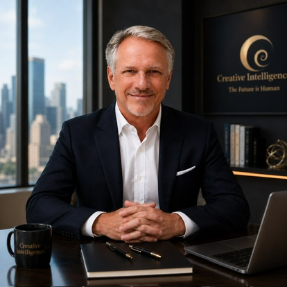

Early Access
Explore new ideas, profiles, and learning experiences as they develop.

/>A Personal Invitation
Creative Intelligence
Angelo Segarra · Author · Educator · Artist
I’m inviting a small group of educators, creators, innovators, and lifelong learners to help shape a new vision for education in the age of artificial intelligence. This is not about purchasing software. It is about helping build a future where AI supports creativity, reflection, discernment, and deeper human understanding.
“I did not begin this work because I believed I had all the answers. I began with a question that followed me throughout my life: Was I genuinely creative?”
The Beginning
For more than three decades, my work as a painter, educator, and author has explored one central question:
My journey began with painting. I wanted to create something beautiful, but my deeper motivation was to discover whether I was genuinely creative. I wanted to make something that felt truly my own.
Over time, I began to recognize different ways of thinking within the creative process: imagination, observation, transformation, and vision. These discoveries became the foundations of the Creative Intelligence framework.
Artificial intelligence now gives us the opportunity to make this journey more personal. Its greatest educational contribution may not be simply delivering information more efficiently, but helping us understand how different people learn, imagine, reflect, and develop.
The Vision
Traditional education often begins with what can be measured: information remembered, skills demonstrated, and outcomes achieved. These measures are valuable, but they do not reveal the whole person.
They may not tell us how someone imagines, where they find meaning, what awakens their curiosity, or how they recognize that an idea has become coherent and complete.
Creative Intelligence is an attempt to understand how creativity develops—and how AI might support a learning journey that is reflective, developmental, and responsive to the individual.
Participation
I am inviting a small circle of people who are interested in education, creativity, personal development, artificial intelligence, and the future of human learning.
You do not need to be an expert. I am looking for thoughtful people who are curious about the idea and willing to offer honest reflections as the platform continues to grow.
Explore new ideas, profiles, and learning experiences as they develop.
Share feedback and help shape the direction of Creative Intelligence.
Participate in discussions about creativity, education, and AI.
Be recognized, with your permission, as part of the original Founding Circle.
What I Am Asking
I am not asking you to purchase anything or make a financial investment.
I am asking for your interest, your perspective, and your willingness to help me explore whether this idea can contribute something meaningful to education and personal development.
Your participation might take the form of trying the Creative Intelligence Profile, sharing your response, suggesting improvements, joining an occasional conversation, or introducing the project to someone who may find it valuable.
A Personal Invitation
Every meaningful idea begins with a small group of people willing to see its possibilities before the path is completely clear.
If this vision resonates with you, I would be honored to welcome you into the Creative Intelligence Founding Circle.
One day, I hope you will be able to say: “I was there at the very beginning.”